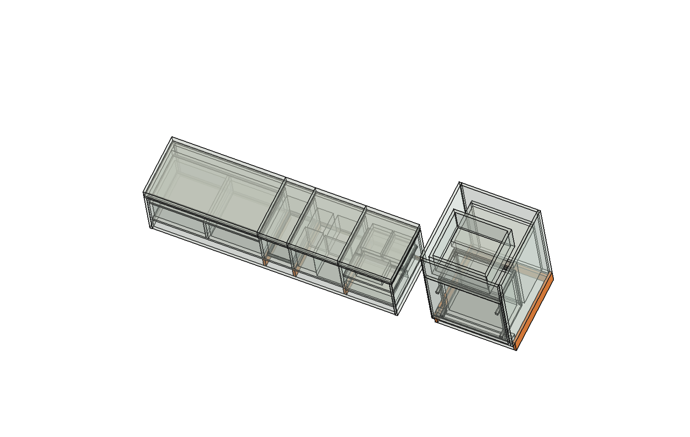

Guedala Park · etapa 4 · base R30 · 14/10/2026
Como construir e manter os móveis
Estudo dos apoios do banco e do cesto, interfaces das tampas, montagem e fixação dos armários. Novos apoios em laranja; referências existentes em cinza.
Abrir estudo separado no FreeCAD · Memória completa, contas e fontes
Os sete apoios são propostas geométricas, não peças liberadas para corte. Material, ligações, nivelamento e capacidade ainda precisam de definição. O apartamento R30 permanece intacto.
D01 · Apoiar o banco até o piso
A frente e as laterais já chegam ao piso de referência. A proposta completa os apoios sob três divisórias e o painel posterior, nos vazios abaixo dos compartimentos.
Caminho da carga: tampa → bordas do corpo e divisórias → apoios inferiores e uniões → piso nivelado.
Encontros que precisam de detalhe
B01 chega à divisória em Z80. B02 e B03 apoiam o fundo Z82–100, sob as divisórias. B04 preenche os 18 mm sob o posterior.
Altura preservada
Proteção do piso e nivelamento entram dentro do envelope dos apoios. Acrescentar pés por baixo mudaria o assento a470 e exige revisar o conjunto.
D02 · Tampas apoiadas e retidas
A tampa fechada descarrega no corpo. Dobradiça e retentor têm funções distintas: conduzir o giro e manter a tampa aberta. O retentor não sustenta uma pessoa sentada.
Extremidades:17 mm de apoio; frente18 e posterior16. Revestimento, reforço e ferragem precisam caber no orçamento de20 mm da tampa. A de825 mm exige verificar flexão e carga concentrada.
Rotina preservada
Bebidas e balde: retirar almofadas antes de abrir. Potes: a almofada gira com o conjunto, acoplamento pendente. Folha: retirada da almofada e apoio nos outros setores ainda são proposta.
Ficha da ferragem
Eixo real, envelope em todo o giro, massa completa, retenção aberta, ângulo, pega, fixações e liberação de manutenção. Ferragem não pode ocupar passagem do conteúdo.
| Setor | Madeira hipotética · kg | Momento fechado · N·m |
|---|
| 1 | 2.60–3.12 | 5.71–6.86 |
| 2 | 2.46–2.95 | 5.40–6.49 |
| 3 | 1.44–1.73 | 3.16–3.79 |
| 4 | 5.54–6.65 | 12.18–14.62 |
Hipótese: envelope homogêneo, densidade750–900 e centro a224 mm de eixo traseiro ideal. Exclui almofada, pega, ferragem, impacto e pessoa. Os valores não selecionam mola/pistão nem definem capacidade do assento.
D03 · Base estrutural do cesto
Laterais existentes começam em Z98. Dois prolongamentos inferiores recuados50 mm e um apoio traseiro sustentam o corpo/base sem fechar a abertura hidráulica do fundo em U.

| ID | Função | Envelope X × Y × Z · mm |
|---|
| B01 | Apoio sob divisória dos potes | 18 × 390 × 80 |
| B02 | Apoio sob base e divisória das bebidas | 18 × 390 × 82 |
| B03 | Apoio sob base e divisória da folha | 18 × 390 × 82 |
| B04 | Fechamento de apoio sob posterior | 1764 × 18 × 18 |
| C01 | Apoio inferior lateral 1 recuado | 18 × 580 × 98 |
| C02 | Apoio inferior lateral 2 recuado | 18 × 580 × 98 |
| C03 | Apoio traseiro sob base | 554 × 18 × 80 |
São envelopes incluindo eventual proteção/nivelamento, não lista de corte. As posições locais completas estão na memória geométrica.
Contra os novos apoios: nenhum volume existente invadido no estado fechado. No giro ideal0–55°, permanecem2 mm de cada lado e274 até o apoio traseiro. Isso não é tolerância de fabricação ou validação de ferragem real.
D04 · Montar para conseguir manter
Montagem do gabinete
- Base, apoios, laterais e esquadro.
- Fundo em U e ligações estruturais.
- Apoio independente de tanque/pedra.
- Hidráulica acessível.
- Articulação, frente, batente e retenção.
- Painel superior removível pela frente.
Manutenção do cesto
- Afastar a Loop650, na posição proposta.
- Retirar saco e sustentar o conjunto.
- Liberar retenções; retirar painel/armação.
- Acessar sifão e conexões.
- Recompor, conferir retenção e fechar.
- Devolver a lixeira à posição habitual.
Painel superior550 ×222 ×18; abertura traseira450 ×602 preservada. As reservas de pivô e pinos são gabaritos. A articulação precisa de batente físico55°, retenção e desacoplamento acessível. Não tomar o controle de software como mecanismo.
Carga: o estudo anterior apresentou17,95–25,69 N·m a55° em cenários de massa, com mudança de sentido do momento durante o giro. A escolha exige o conjunto real cheio e vazio, não a capacidade de outro produto.
D05 · Armários: interfaces a fechar
| Conjunto | Direção de montagem | Dependência |
|---|
| Aéreos | Fixação ligada ao corpo, com acesso e regulagem. | Parede, peso e espaço para engatar/retirar dentro da folga ao teto. |
| Roupeiro | Manter recuo10 e curso500; pega compatível. | Peso das gavetas, paralelismo e fixação das guias. |
| Maleiro | Trilhos, retenção e batentes acessíveis. | Aplicação em folhas baixas/largas ainda por confirmar. |
| Banheiro | Corpo suspenso; acesso ao sifão; espelho no painel. | Ancoragem, hidráulica, adesivo/retenção e espessuras reais. |
| Prateleiras / gaveta de piso | Apoios retidos e rodízios ligados à caixa. | Carga, flecha, piso e apoio efetivo das rodas. |
Não ocupar folgas nem criar furação por aproximação. As referências de ferragens já estudadas permanecem candidatas; o caderno não cria uma compra nova.
D06 · O que fechar com o marceneiro
Material e acabamento; cargas e massas de uso; desenho das uniões; ferragens exatas e seus volumes; fixação à obra; tolerâncias; sequência de montagem/manutenção e critérios de recebimento.
Para o banco, definir ocupantes, carga concentrada e flecha. Para o cesto, testar cheio/vazio, retenção e retirada para manutenção. Os conteúdos e o programa aprovado permanecem preservados.
Avanço desta rodada: sete apoios desenhados e conferidos, estudo CAD separado, caminho de cargas explicitado e interfaces organizadas. Próximo fechamento: material, ligações, capacidade e ferragens reais.
Ler detalhes e limites completos · Conferência geométrica · Roteiro da visita